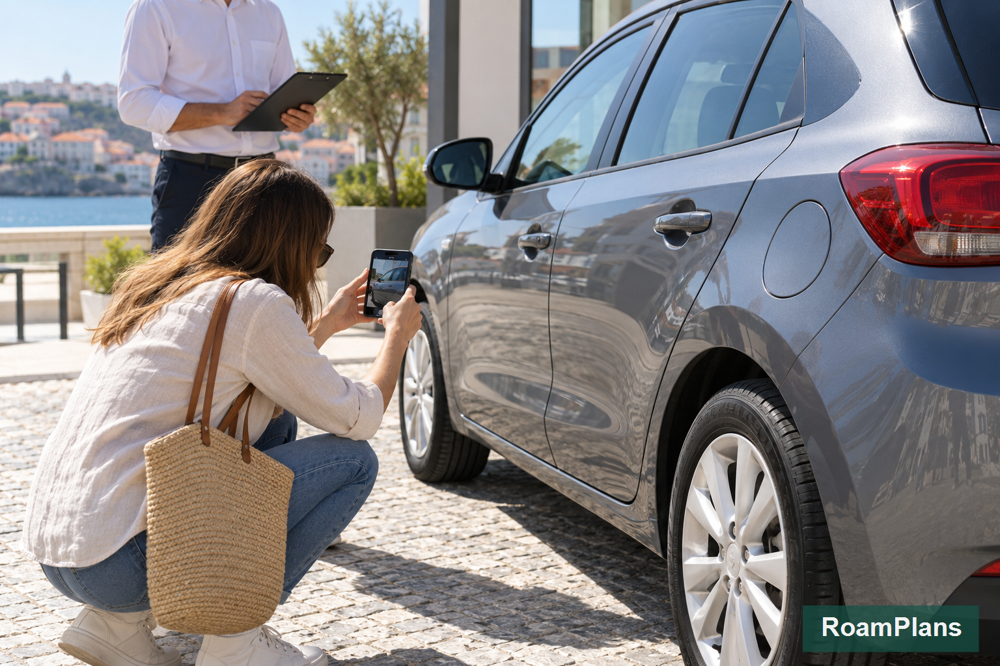

Renting a Car in Portugal: Costs, Insurance and When You Need One
Renting a car in Portugal can make some trips much easier, but keeping one for the entire vacation is often unnecessary. Lisbon, Porto, Coimbra, and several major rail routes work well without a car. The value changes once your plans include remote Algarve beaches, rural Alentejo, countryside hotels, smaller villages, or an independent Douro Valley route. The harder decision is usually not whether Portugal has good roads. It is deciding which days justify the rental cost.
When I compare Portugal rental-car options for RoamPlans, I calculate more than the price shown in the first search result. A cheap daily rate can become much higher after insurance, automatic transmission, airport fees, young-driver charges, toll services, fuel, additional drivers, and one-way returns are added. For most first-time visitors, the strongest strategy is to rent a car only for the road-based part of the itinerary and use trains or city transport everywhere else.
Renting a Car in Portugal at a Glance

| Question | Practical Answer |
|---|---|
| Do you need a car in Lisbon? | Usually no |
| Do you need a car in Porto? | Usually no |
| Do you need a car in Coimbra? | Usually no |
| Do you need a car for Sintra? | Usually no |
| Is a car useful in the Douro Valley? | Yes, for independent multi-stop trips |
| Is a car useful in rural Alentejo? | Yes |
| Is a car useful in the Algarve? | Often yes outside major towns |
| Automatic or manual? | Book automatic early if you do not drive manual |
| Is insurance included? | Some basic protection may be included, but excess can remain |
| Will a deposit be required? | Usually yes |
| Can young drivers rent? | Often, but company rules and fees vary |
| Can you return the car elsewhere? | Often yes, sometimes with a one-way fee |
The key rule is:
Do not rent a car simply because you are visiting Portugal. Rent one because a specific part of your itinerary becomes meaningfully easier with it.
When Do You Actually Need a Rental Car in Portugal?
The answer depends on your route.
A rental car gives the most value when public transport stops matching the places you want to visit.
You Probably Do Not Need a Car for Lisbon
Lisbon has:
- ✓Metro
- ✓Buses
- ✓Trams
- ✓Urban trains
- ✓Taxis
- ✓Ride services
Keeping a rental vehicle during several central Lisbon days can mean paying for:
- ✓Rental days
- ✓Parking
- ✓Fuel
- ✓Toll-service fees
- ✓Insurance
while the vehicle remains parked.
A better setup is often:
arrive in Lisbon → explore without a car → collect rental when leaving the city
You Probably Do Not Need a Car for Porto
Central Porto also works well without one.
Walking, Metro, buses, rail, taxis, and ride services cover most first-time visitor needs.
If you spend three nights in Porto and then begin a road trip, collect the car on your departure day.
There is little value in paying for it during the city stay.
You Usually Do Not Need a Car for Coimbra
Coimbra's main historic areas can be explored without keeping a car.
The city also sits on Portugal's main north–south rail route.
A traveler following:
Porto → Coimbra → Lisbon
can usually make the entire section by train.
You Usually Do Not Need a Car for Sintra
A car may look useful because Sintra has several attractions spread across hills.
In practice, parking and vehicle restrictions around popular areas can make it less convenient than expected.
For a normal Lisbon day trip, train plus local Sintra transport is often simpler.
A car becomes more useful if Sintra is only one stop in a wider regional road route.
Where a Rental Car Becomes Useful?
Some parts of Portugal are much easier with independent road transport.
Wider Algarve
The Algarve is one of the strongest places to consider a short rental.
A car helps with routes involving:
- ✓Sagres
- ✓Cabo de São Vicente
- ✓Silves
- ✓Monchique
- ✓Smaller beaches
- ✓Rural hotels
- ✓Several coastal stops in one day
You can still visit the Algarve without a car.
The rental becomes useful when you want to move beyond one well-connected base.
Rural Alentejo
Évora itself does not require a car.
A wider Alentejo trip is different.
Driving helps if your itinerary includes:
- ✓Small towns
- ✓Vineyards
- ✓Rural hotels
- ✓Countryside
- ✓Several villages in one day
Public transport may reach individual towns, but it may not suit a flexible multi-stop route.
Douro Valley
A rental car gives you freedom to choose:
- ✓Wineries
- ✓Viewpoints
- ✓Villages
- ✓Restaurants
- ✓Countryside stays
It works especially well if you are spending one or more nights in the valley.
For a wine-tasting day, however, a train or tour may be better unless someone in the group remains the sober driver.
Rural Central and Northern Portugal
A car also becomes more useful for itineraries built around:
- ✓Small villages
- ✓Mountain areas
- ✓National parks
- ✓Rural accommodation
- ✓Scenic road routes
These are trips where rail and coach timetables can start controlling too much of your day.
When a Rental Car Is Not Worth the Cost
Skip the car if most of your itinerary looks like:
Lisbon → Sintra → Coimbra → Porto
All four destinations can fit public transport well.
You may spend less money and avoid:
- ✓Rental pickup
- ✓Parking
- ✓Fuel
- ✓Toll arrangements
- ✓Vehicle return
- ✓City traffic
A rental car should remove travel problems rather than create new ones.
A Good Portugal Car-Rental Strategy
Instead of renting from airport arrival until departure, split the trip into sections.
For example:
Days 1–4
Lisbon without a car.
Day 5
Collect rental car.
Days 5–8
Alentejo or Algarve road section.
Day 9
Return car.
Days 9–12
Porto by train and local transport.
You pay for the vehicle only while it is useful.
This can also reduce parking and insurance costs.
How Much Does It Cost to Rent a Car in Portugal?
Car-rental prices change constantly.
They depend on:
- ✓Travel dates
- ✓Season
- ✓Pickup city
- ✓Airport or downtown location
- ✓Vehicle category
- ✓Manual or automatic transmission
- ✓Rental length
- ✓Driver age
- ✓Insurance
- ✓Demand
A current market snapshot shows an overall Portugal rental average of around $40 per day, with small and medium cars often averaging in the high-$30s before your personal extras are considered.
That should be treated as a planning benchmark, not a guaranteed rate.
Your actual booking can be much cheaper or much more expensive.
Why the Advertised Daily Price Is Not Your Real Cost?
Suppose a search result displays a very low daily rental price.
That number may not tell you the cost of the complete trip.
Your final rental budget can include:
Base rental rate
plus:
Insurance or protection
plus:
Security deposit authorization
plus:
Automatic transmission premium
plus:
Young-driver surcharge
plus:
Additional driver
plus:
Toll-device service
plus:
Child seat
plus:
Fuel
plus:
Parking
plus:
One-way fee
The only useful number is the final price for your exact rental conditions.
Portugal Rental Car Cost Breakdown
1. Base Rental Rate
This is the main advertised vehicle price.
It depends heavily on:
- ✓Car size
- ✓Dates
- ✓Pickup location
- ✓Rental length
Small manual cars often appear at the lowest rates.
2. Taxes and Mandatory Charges
Check whether the booking total already includes applicable taxes and location charges.
Do not compare two rental companies until both quotes show the final required charges.
3. Insurance and Protection
Basic legal liability and damage/theft protection arrangements depend on the rental product and renter.
Even when damage protection is included, you may still have a large excess, also called a deductible.
Reducing that excess can increase the daily price.
Part 2 will explain each insurance type in detail.
4. Deposit
The rental company normally places a temporary authorization on your payment card.
The deposit is different from the rental price.
It protects the rental company against items such as:
- ✓Damage
- ✓Missing fuel
- ✓Extra rental days
- ✓Other unpaid rental charges
The amount can change dramatically by company and vehicle category.
5. Automatic Transmission
Manual cars are common in Portugal.
Automatic cars are available, but they can:
- ✓Cost more
- ✓Have less availability
- ✓Sell out earlier
If you only drive automatic vehicles, book the transmission you need from the beginning.
Do not choose a manual car simply because the price is lower.
6. Additional Driver
If two people will drive, the second driver may need to be registered on the rental contract.
An additional-driver fee can apply.
Do not allow an unregistered driver to use the car.
That can create serious problems if an accident occurs.
7. Young-Driver Fee
Rental companies set their own age policies.
Younger drivers may:
- ✓Pay an additional daily charge
- ✓Have fewer vehicle categories available
- ✓Need to have held a license for a minimum period
There is no single rental-company minimum age that applies to every Portugal booking.
Check the policy for your exact company and vehicle.
8. One-Way Rental Fee
You may want to collect a vehicle in Lisbon and return it in Faro or Porto.
Many rental companies allow this.
An extra one-way charge may apply.
Compare the fee before booking because it can sometimes be worth paying to avoid driving back to your starting city.
9. Airport or Premium Location Fee
Airport and major transport-hub rentals can include location-related charges.
A downtown rental office may sometimes be cheaper.
However, saving a small amount is not useful if reaching the office requires an expensive taxi and extra time.
Compare the complete pickup process.
10. Fuel
Fuel is separate from the rental rate unless your booking specifically states otherwise.
Your final road-trip budget should therefore include petrol, diesel, or charging costs.
11. Toll Service
Some rental companies offer an electronic toll device or toll-management service.
You may pay:
- ✓Toll charges
- ✓Device fee
- ✓Administration charge
The previous Driving in Portugal: Road Rules, Tolls, Parking and Safety guide explains how the Portuguese toll system works.
Cheap Portugal Car Rentals: What Should You Check?
An unusually cheap rate is not automatically a bad deal.
But compare what is included.
Look at:
- ✓Mileage allowance
- ✓Insurance excess
- ✓Deposit
- ✓Fuel policy
- ✓Driver age rules
- ✓Pickup hours
- ✓Airport fee
- ✓Additional driver fee
- ✓Toll-device fee
- ✓Cancellation rules
A $15 base rate with expensive extras can cost more than a $35 rental with better terms.
Compare the complete reservation rather than the headline price.
Does Season Affect Portugal Car-Rental Prices?
Yes.
Rental demand rises when more travelers want vehicles at the same time.
The difference is especially noticeable in tourism-heavy areas such as the Algarve.
High-demand periods can affect:
- ✓Price
- ✓Automatic-car availability
- ✓Vehicle choice
- ✓Last-minute bookings
If your summer itinerary definitely requires a car, reserve earlier.
You can still review the cancellation conditions before committing to a restrictive rate.
Does Rental Length Affect the Daily Price?
It can.
A seven-day rental does not always cost seven times the price of one day.
Rental pricing systems can offer different daily averages for:
- ✓Weekend bookings
- ✓Weekly rentals
- ✓Longer periods
However, do not keep the vehicle for extra days only to get a lower daily average.
Your total cost still matters more.
Which Car Size Is Best for Portugal?
For most couples or solo travelers, a small car is often the easiest choice.
Small vehicles are useful for:
- ✓Narrow streets
- ✓Parking garages
- ✓Rural lanes
- ✓Fuel efficiency
- ✓City parking spaces
Do not automatically upgrade to a large SUV.
Portugal's roads can handle large vehicles, but older towns and garages may not feel comfortable in one.
Small Car vs Medium Car
Choose a Small Car If:
- ✓One or two people are traveling
- ✓Luggage fits securely
- ✓You will enter smaller towns
- ✓Easy parking matters
Choose a Medium Car If:
- ✓You have more passengers
- ✓You carry several suitcases
- ✓You need more comfort for long drives
The smallest car is not useful if luggage remains visible because it cannot fit inside.
Should You Rent an SUV in Portugal?
An SUV is rarely required for a normal first-time Portugal road trip.
Most visitor routes use paved roads.
A larger vehicle may add:
- ✓Higher rental cost
- ✓More fuel use
- ✓Harder parking
- ✓Less room in narrow garages
Rent one because your route or group needs the space, not because it looks more suitable for a road trip.
Manual vs Automatic Rental Cars
This decision should be made early.
Portugal has many manual-transmission rental vehicles.
For travelers from the United States, automatic transmission may feel more familiar.
Rent a Manual If:
- ✓You already drive manual confidently
- ✓You are comfortable with hill starts
- ✓You want more vehicle options
Rent an Automatic If:
- ✓That is what you normally drive
- ✓You want less workload on unfamiliar roads
- ✓Mountain or city driving already feels demanding
Do not use the vacation to learn manual transmission.
Book Automatics Earlier
Automatic vehicles can be more limited than manual cars.
This is especially relevant during high-demand travel periods.
When comparing rates, make sure the filter clearly says:
Automatic
A cheap manual quote is not a useful comparison if you cannot drive it.
Portugal Rental Car Age Requirements
Rental-company age policies are not identical.
For example, current major-company rules show that minimum ages can differ by brand and vehicle category.
Some companies allow selected vehicles from age 18.
Others use 21 as their standard minimum and apply a surcharge to younger renters.
Higher-value vehicles can have stricter requirements.
Drivers Under 25
If you are under 25, expect to check:
- ✓Young-driver surcharge
- ✓Minimum license-holding period
- ✓Vehicle restrictions
- ✓Insurance conditions
Enter your real age during the search.
Otherwise, the first price you see may not include the correct surcharge.
How Long Must You Have Held Your License?
Rental companies can require the license to have been held for a minimum period.
One year is common in major-company policies, but requirements can depend on:
- ✓Company
- ✓Driver age
- ✓Vehicle class
Check this before paying for the booking.
Can U.S. Travelers Drive a Rental Car in Portugal?
Portugal currently recognizes qualifying U.S. driving licenses under its OECD license rules.
For eligible drivers, the license must be:
- ✓Valid
- ✓Appropriate for the vehicle category
- ✓Within the applicable recognition conditions
Rental companies can still set additional documentation rules beyond Portugal's basic legal recognition.
This distinction matters.
Legal permission to drive and a rental company's pickup policy are not always identical.
Do Americans Need an International Driving Permit?
A standard valid U.S. license can be recognized in Portugal under current rules when the legal conditions are met.
An International Driving Permit does not replace your original license.
Your rental company may still have its own documentation policy.
Before leaving the United States, check what the exact company requires for your license.
If you carry an IDP, carry your original driver's license as well.
What Documents Should You Bring to the Rental Desk?
A first-time U.S. renter should be ready with:
- ✓Valid driver's license
- ✓Passport
- ✓Payment card in the main driver's name
- ✓Rental confirmation
- ✓International Driving Permit if required for your situation or rental policy
The person named as the main driver should also be present.
Do not assume another traveler's credit card can always be used for the deposit.
Why the Payment Card Matters
A rental company may place a deposit hold on the main driver's card.
This means your available credit may temporarily fall by the amount of the authorization.
The required amount can vary from a few hundred euros to much more for premium vehicle categories.
This is why a rental that looks affordable can still create a problem at pickup if your card does not have enough available credit.
Portugal Rental Car Insurance Explained
Insurance is often the most confusing part of renting a car in Portugal.
A booking may already include some protection, but that does not always mean you have zero financial responsibility if the vehicle is damaged or stolen.
Before paying for extra coverage, understand five terms:
- ✓Collision Damage Waiver
- ✓Theft Protection
- ✓Excess
- ✓Security deposit
- ✓Additional protection
These terms affect different parts of the rental.
Collision Damage Waiver — CDW
A Collision Damage Waiver, usually called CDW, limits how much the rental company can charge you for eligible damage to the rental vehicle.
It is commonly included in many Portugal rental rates, but the conditions differ by company and booking.
CDW is not the same as having no liability.
You may still be responsible for an excess.
Example
Suppose your rental includes CDW with a €1,500 excess.
Eligible damage costs:
€3,000
Your maximum responsibility under that protection may be limited to:
€1,500
provided the damage is covered and you followed the rental agreement.
The exact amount depends on your contract.
What Is an Insurance Excess?
The excess is the amount of eligible damage you remain financially responsible for before or within the rental company's protection limit.
Americans may know a similar concept as a deductible.
This number can be much more useful than seeing the word:
CDW included
on a booking page.
Always ask:
What is my damage excess?
Why the Excess Matters
Two rentals can have similar daily prices but very different financial exposure.
For example:
Rental A
€35 per day€1,800 damage excess
Rental B
€43 per day€500 damage excess
Rental A has the cheaper headline price.
Rental B leaves you with less potential out-of-pocket responsibility.
Neither is automatically better.
You need to compare both the rental rate and the protection terms.
What Is Super CDW or Zero-Excess Protection?
Rental companies use different names for upgraded damage protection.
You may see terms such as:
- ✓Super CDW
- ✓Excess Reduction
- ✓Super Cover
- ✓Premium Protection
- ✓Zero-Excess Protection
The purpose is generally to reduce your financial liability from the standard excess.
Depending on the product, the excess may fall:
- ✓From a high amount to a lower amount
- ✓Or to zero for covered damage
Do not assume the word full means every possible type of damage is covered.
Read the exclusions.
Zero Excess Does Not Mean Everything Is Covered
Even an upgraded protection package can have exclusions.
Common areas that may need separate attention include:
- ✓Tyres
- ✓Wheels
- ✓Glass
- ✓Mirrors
- ✓Roof
- ✓Undercarriage
- ✓Interior
- ✓Lost keys
- ✓Wrong fuel
- ✓Negligent damage
- ✓Unauthorized drivers
The exact list depends on the company.
Check what the zero-excess product actually covers before paying for it.
Theft Protection
Theft Protection, sometimes shown as TP, limits your financial responsibility if the rental vehicle is stolen under qualifying circumstances.
Like CDW, it can still include an excess.
For example, a rental may include theft protection but leave you responsible for the first portion of the covered loss.
Theft Protection Can Have Conditions
Coverage may be affected if you:
- ✓Leave the vehicle unlocked
- ✓Leave keys inside
- ✓Lose the keys
- ✓Leave windows open
- ✓Ignore required security procedures
- ✓Allow an unauthorized driver to use the car
Follow the rental agreement carefully.
Theft Protection vs Personal Belongings
Theft protection for the car does not automatically mean the items inside the vehicle are insured.
Your:
- ✓Laptop
- ✓Camera
- ✓Suitcase
- ✓Phone
- ✓Clothing
may fall under travel insurance, personal insurance, or another policy instead.
Do not leave valuables visible simply because the rental car has theft protection.
Glass and Windscreen Protection
Windscreen or glass damage may not receive the same protection as normal body damage.
An extra product may cover items such as:
- ✓Windscreen
- ✓Side windows
- ✓Rear glass
This can matter on a road trip where small stones or road debris may cause damage.
Check whether glass is already included before adding another product.
Tyre and Wheel Protection
Tyres and wheels can also sit outside standard CDW terms.
Extra protection may cover some damage to:
- ✓Tyres
- ✓Rims
- ✓Wheels
This can be useful for travelers expecting long road days, but do not buy it without reading the standard policy first.
You may already have relevant protection through another source.
Undercarriage and Roof Damage
Standard damage waivers can exclude certain parts of the car.
The underbody is one example.
This is another reason to stay on roads permitted by the rental agreement.
Do not take a normal rental car onto a rough or prohibited track simply because navigation shows it as a shortcut.
Personal Accident Insurance
You may also be offered Personal Accident Insurance, often called PAI.
This is different from damage protection for the rental car.
PAI may provide benefits related to the driver or passengers after an accident.
Possible areas can include:
- ✓Medical costs
- ✓Accident benefits
- ✓Personal injury
- ✓Death benefits
Before buying it, check your existing coverage.
Do You Already Have Personal Accident Coverage?
A U.S. traveler may already have related protection through:
- ✓Travel insurance
- ✓Health insurance
- ✓Employer insurance
- ✓Credit-card travel benefits
Do not assume you need every insurance product shown at the rental counter.
Review your existing policies before the trip.
Personal Effects Coverage
Some rental companies may offer protection for personal belongings.
This can overlap with:
- ✓Travel insurance
- ✓Homeowners insurance
- ✓Renters insurance
- ✓Credit-card benefits
Check:
- ✓Coverage limits
- ✓Deductible
- ✓Theft requirements
- ✓Excluded items
A policy with a low maximum benefit may provide less value for expensive camera or computer equipment than expected.
Roadside Assistance Protection
Standard roadside help and optional roadside products are not always the same.
An optional roadside package may cover renter-caused problems such as:
- ✓Lost keys
- ✓Locked keys
- ✓Flat battery
- ✓Some tyre problems
- ✓Fuel mistakes
The standard breakdown service may cover a mechanical failure that is not your responsibility.
Ask what is already included before adding an extra roadside package.
Insurance vs Damage Waiver
The terminology can become confusing because rental companies use both insurance and waiver products.
A CDW is often a contractual waiver that limits what the rental company will charge you for eligible vehicle damage.
It does not necessarily work like a normal personal auto insurance policy.
For trip planning, focus on the outcome:
- ✓What damage is covered?
- ✓What is excluded?
- ✓What is my maximum excess?
- ✓What do I need to do after an accident?
Those questions matter more than the marketing name.
What Is a Rental Car Security Deposit?
The security deposit is separate from your damage excess.
This distinction matters.
A deposit is money or available card credit temporarily held by the rental company.
An excess is the potential amount you may owe for qualifying damage.
They are not the same number.
What Can the Deposit Cover?
The rental company may use the deposit for charges such as:
- ✓Missing fuel
- ✓Late return
- ✓Extra rental days
- ✓Additional mileage
- ✓Cleaning charges
- ✓Unpaid extras
- ✓Other amounts allowed by the contract
The company normally releases the unused authorization after the rental closes.
Your bank can take additional time to make the credit available again.
Deposit Example
Suppose your rental costs:
€300
and the company requires a:
€300 security deposit
A credit-card company may temporarily show:
€600 of your available credit committed
depending on the rental company's authorization process.
This does not necessarily mean you have been permanently charged €600.
Part of it may simply be an authorization hold.
Deposit Amounts Vary Widely
There is no single Portugal car-rental deposit.
The amount can change based on:
- ✓Rental company
- ✓Vehicle category
- ✓Protection level
- ✓Payment method
- ✓Rental cost
- ✓Premium vehicle class
Higher-value cars can require much larger deposits.
For example, some current Portugal rental-company policies require deposits in the thousands of euros for premium or luxury categories.
This is another reason a small standard vehicle can simplify a first trip.
Does Buying More Insurance Lower the Deposit?
Sometimes.
Some rental companies reduce the required deposit when you purchase protection that lowers the damage excess.
This is not universal.
Do not buy extra coverage only because you assume the deposit will disappear.
Check the exact deposit shown for your booking before paying.
Credit Card vs Debit Card for a Portugal Rental Car
Payment-card rules differ by company.
A credit card in the main driver's name is generally the simplest option.
It gives the rental company a way to place the required authorization against the available credit limit.
Why Credit Cards Are Easier
With a credit card, the rental company normally places an authorization hold against your available credit.
The funds are not always taken from your bank account as a completed payment.
You still need enough available credit to cover:
- ✓Rental cost
- ✓Deposit
- ✓Any required authorization
A card with a very low available limit can cause problems at pickup.
Can You Rent a Car With a Debit Card?
Some Portugal rental companies accept qualifying debit cards for certain vehicle groups.
Others restrict debit-card use.
Possible conditions may include:
- ✓Visa or Mastercard network
- ✓Card in the main driver's name
- ✓Enough available account balance
- ✓Vehicle-category restrictions
- ✓Additional identification
Prepaid cards and cash may not be accepted for the security deposit.
Check the exact rental location, not just the company's global payment page.
Why a Debit-Card Deposit Can Feel Different
With a credit card, a deposit usually reduces available credit.
With a debit card, the money may be blocked or removed from the available bank balance until it is released.
That can affect how much cash you have available during the trip.
A large hold can therefore be inconvenient even when the rental itself is affordable.
How Long Does the Deposit Take to Return?
The rental company can release the authorization after the vehicle is returned and the account is closed.
Your bank controls how quickly that available credit or money appears again.
It may take several business days.
Do not plan your Portugal trip assuming the deposit will become available immediately after returning the car.
Make Sure the Card Is in the Main Driver's Name
This is one of the most common details travelers overlook.
The payment card used for the rental deposit often needs to belong to the person listed as the main driver.
For example:
Driver: Alex
Deposit card: Sarah
may create a problem if the rental company's policy requires Alex's card.
Check before the trip rather than at the counter.
Check Your Available Credit Before Flying
Do not look only at the credit-card limit.
Look at the available balance.
Example:
Credit limit: $3,000Already used: $2,300Available: $700
If the rental company needs a €1,000 authorization, the card may fail even though it has a $3,000 total limit.
Premium Cars Can Require Extra Cards
Some companies apply stricter payment rules to high-value categories.
Current Portugal policies at some major agencies can require:
- ✓Much larger deposits
- ✓Two physical credit cards
- ✓Stricter card conditions
For a first Portugal road trip, renting a normal compact or midsize car keeps this much simpler.
Does Your U.S. Credit Card Include Rental Car Coverage?
Some U.S. credit cards provide rental-car damage benefits.
This can be useful.
However, the coverage varies significantly by card.
Do not rely on the logo on the card.
Check the actual benefit guide.
Primary vs Secondary Credit-Card Coverage
Credit-card rental coverage can be:
Primary
It may respond without requiring you to file through another eligible auto policy first, subject to the card's rules.
Secondary
It may respond after other applicable insurance.
This distinction can affect how a claim is handled.
Read your card's current terms.
What Credit-Card Rental Coverage May Cover
Depending on the card, benefits can include certain:
- ✓Collision damage
- ✓Theft damage
- ✓Towing related to covered damage
- ✓Loss-of-use charges
Coverage limits and exclusions differ.
What Credit-Card Coverage May Not Cover
Do not assume it covers:
- ✓Third-party liability
- ✓Personal injury
- ✓Medical expenses
- ✓Personal belongings
- ✓Every vehicle type
- ✓Every rental duration
- ✓Every country
- ✓Negligent use
This is why a credit-card benefit is not automatically a complete replacement for every rental protection product.
Do You Have to Decline CDW for Credit-Card Coverage?
Some credit-card benefits require the cardholder to decline the rental company's optional collision coverage for the card's benefit to apply.
Other situations can differ.
Check the benefit guide before pickup.
Do not stand at the counter trying to understand your credit-card insurance for the first time.
Call Your Credit-Card Company Before the Trip
Ask:
- ✓Is Portugal covered?
- ✓Is rental-car damage coverage primary or secondary?
- ✓Do I need to decline CDW?
- ✓What vehicle categories are excluded?
- ✓What is the maximum rental period?
- ✓Are tyres, glass and undercarriage included?
- ✓What documents would I need for a claim?
If possible, save a copy of the benefits guide on your phone.
Rental Company Coverage vs Credit-Card Coverage
These options handle claims differently.
Rental Company Protection
Advantages can include:
- ✓Lower or zero excess
- ✓Simpler rental-company claim process
- ✓Less financial exposure at return
Disadvantages can include:
- ✓Higher daily price
- ✓Possible exclusions
Credit-Card Protection
Advantages can include:
- ✓No separate daily protection cost if eligible
- ✓Strong coverage on some premium cards
Possible disadvantages include:
- ✓Claim paperwork
- ✓You may initially be charged
- ✓Exclusions
- ✓Need to provide documents
- ✓Liability coverage may not be included
Choose based on your own risk tolerance and confirmed benefits.
Third-Party Rental Insurance
Some booking websites and independent insurers sell separate rental-car excess protection.
These products can cost less than protection purchased directly from the rental desk.
However, the process may be different.
If damage occurs, you may need to:
- ✓Pay the rental company.
- ✓Collect the documents.
- ✓Submit a claim to the third-party insurer.
- ✓Wait for reimbursement.
Understand this before booking.
Rental Company Zero Excess vs Third-Party Excess Insurance
These products can sound similar but work differently.
Rental Company Zero-Excess Product
May reduce what the rental company charges you directly for covered damage.
Third-Party Excess Insurance
May reimburse you after the rental company charges you.
That difference can matter if a large charge appears on your card while you are still traveling.
How to Avoid Paying for Duplicate Coverage
Before your trip, create a short list of what you already have.
Rental Rate
What protection is included?
Credit Card
What rental coverage does it provide?
Travel Insurance
Does it include rental-car excess or accident benefits?
Personal Insurance
Does any policy apply outside the United States?
Then compare these against the products offered by the rental company.
Do not automatically accept or decline everything.
Questions to Ask About CDW
Before buying a rental, check:
- ✓Is CDW already included?
- ✓What is the damage excess?
- ✓Which parts of the car are excluded?
- ✓Can the excess be reduced?
- ✓What would the zero-excess option cost?
This gives you a much clearer comparison between rental companies.
Questions to Ask About Theft Protection
Check:
- ✓Is theft protection included?
- ✓What is the theft excess?
- ✓What actions could invalidate the protection?
- ✓Are keys covered?
- ✓Are personal belongings covered?
Do not assume CDW and theft protection are the same product.
Questions to Ask About the Deposit
Before pickup, know:
- ✓Exact deposit amount
- ✓Accepted card type
- ✓Whether the card must be credit rather than debit
- ✓Whether it must be in the main driver's name
- ✓Expected release process
- ✓Whether extra protection changes the deposit
If the company cannot give you a universal amount online, check the amount shown in your specific reservation.
Photograph the Rental Car Before Leaving
Insurance becomes easier to deal with when you document the vehicle properly.
Before driving away, inspect:
- ✓Front bumper
- ✓Rear bumper
- ✓Doors
- ✓Wheels
- ✓Windscreen
- ✓Mirrors
- ✓Roof if visible
- ✓Interior
Take clear photos or a short video.
Check Existing Damage
Compare visible damage with the rental condition report.
If you see something that is not recorded:
report it before leaving.
Do not assume a small scratch is too minor to matter.
Photograph the Wheels
Wheels and rims are easy to overlook.
Take photos of each wheel before departure.
Also look for:
- ✓Scratches
- ✓Kerb marks
- ✓Tyre damage
This takes less than a minute and gives you a useful record.
Record the Fuel and Mileage
Photograph:
- ✓Fuel gauge
- ✓Odometer
before starting your rental.
Do the same when returning the vehicle.
These images can help if there is later disagreement about:
- ✓Fuel
- ✓Mileage
- ✓Return condition
Keep the Rental Agreement
Do not throw away the paperwork after collecting the car.
Save:
- ✓Rental contract
- ✓Condition report
- ✓Protection details
- ✓Toll information
- ✓Roadside assistance number
A digital copy on your phone is useful.
What Can Invalidate Rental Protection?
Protection can be reduced or lost if the vehicle is used outside the rental agreement.
Examples can include:
- ✓Unauthorized driver
- ✓Reckless use
- ✓Driving while impaired
- ✓Prohibited roads
- ✓Incorrect fuel
- ✓Failing to report an accident properly
- ✓Leaving keys unsecured
- ✓Taking the car into an unauthorized country
Read the rental conditions before the road trip begins.
Never Let an Unregistered Driver Take Over
If your partner or friend may drive, add them to the rental agreement.
Do this even if they plan to drive only once.
Insurance and waiver protection can depend on the vehicle being driven by an authorized person.
What Insurance Level Should You Choose?
There is no single correct choice.
Standard Protection May Suit You If:
- ✓You are comfortable with the excess
- ✓Your credit card provides confirmed coverage
- ✓You can handle a temporary damage charge
- ✓You understand the claim process
Lower-Excess Protection May Suit You If:
- ✓You want to reduce financial exposure
- ✓You prefer a simpler return process
- ✓Your card coverage is weak or unclear
Zero-Excess Protection May Suit You If:
- ✓You value predictable cost
- ✓A large damage charge would create financial stress
- ✓You prefer dealing directly with the rental company rather than seeking reimbursement later
Choose the protection you understand, not the one with the most reassuring name.
Calculate the Real Insurance Cost
If upgraded protection costs:
€25 per day
for a:
5-day rental
that adds:
€125
to the trip.
Compare that €125 with:
- ✓Standard excess
- ✓Credit-card protection
- ✓Deposit difference
- ✓Your ability to absorb a damage charge
Now you are comparing the actual tradeoff rather than buying insurance out of fear.
The Best Rule for Portugal Rental-Car Insurance
Before clicking Book, you should be able to answer four questions:
1. What protection is already included?
2. What is my maximum excess for covered damage?
3. What does my credit card or travel insurance already cover?
4. How much money or credit will the rental company hold at pickup?
If you cannot answer those questions, you do not yet know the real terms of the rental.
Portugal Rental Car Fuel Policies
Fuel policy can change the real cost of your Portugal car rental.
The most common arrangements are:
- ✓Full-to-full
- ✓Same-to-same
- ✓Prepaid fuel
Read the policy before booking rather than discovering it at return.
Full-to-Full Fuel Policy
With a full-to-full policy:
- ✓You collect the car with a full tank.
- ✓You use the fuel you need.
- ✓You refill the tank before returning the vehicle.
This is usually the easiest fuel policy to understand.
You pay for the fuel you actually use.
Keep Your Final Fuel Receipt
Some rental companies may ask for proof that you refilled close to the return location.
Keep the receipt until the rental is completely closed.
Also photograph the fuel gauge when you return the car.
Same-to-Same Fuel Policy
Some rentals may provide the vehicle with a certain fuel level rather than a full tank.
For example:
Pickup: 3/4 tank
You are expected to return it at approximately the same level.
This can be harder to judge than full-to-full.
Photograph the gauge at pickup so you have a clear record.
Prepaid Fuel
You may also be offered a prepaid fuel option.
You pay for fuel in advance and return the car with whatever amount remains under the product's terms.
The problem is simple:
unused fuel may not be refunded.
This can make prepaid fuel poor value if you drive only short distances.
It can be useful when convenience matters more than getting the lowest possible fuel cost.
What Happens if You Return the Car With Too Little Fuel?
If your contract requires a full tank and you return it below that level, the rental company may charge:
- ✓Missing fuel
- ✓Refueling service fee
The price can be higher than filling the vehicle yourself.
Leave enough time before return to visit a fuel station.
Know the Fuel Type Before Leaving
Portugal rental fleets can include:
- ✓Petrol
- ✓Diesel
- ✓Hybrid
- ✓Plug-in hybrid
- ✓Electric
Confirm the vehicle's fuel type at pickup.
Look at:
- ✓Rental agreement
- ✓Fuel-door label
- ✓Vehicle information
- ✓Key tag
Take a photo.
Do not depend on remembering it several days later.
Returning an Electric Rental Car
Electric rental vehicles can have separate return-charge rules.
For example, a rental company may give you the vehicle above a stated battery level and require you to return it at or above a stated percentage.
Returning it below that level can result in a recharge fee.
Before accepting an EV, ask:
- ✓Required return charge
- ✓Charging cable policy
- ✓Charging network access
- ✓Missing-cable fee
- ✓Recharge fee
An EV can work well in Portugal, but the rental terms still need to fit your route.
Picking Up a Rental Car in Portugal
The pickup desk is where you should solve questions before they become expensive.
Do not treat pickup as a process to finish as fast as possible.
Allow enough time to check:
- ✓Contract
- ✓Vehicle
- ✓Insurance
- ✓Deposit
- ✓Fuel
- ✓Existing damage
- ✓Toll service
- ✓Return instructions
Check the Final Price Before Signing
Compare the rental agreement with the reservation you made online.
Look for any new charges such as:
- ✓Extra insurance
- ✓Additional driver
- ✓Child seat
- ✓GPS
- ✓Toll service
- ✓Roadside package
- ✓Vehicle upgrade
- ✓Fuel product
If something appears that you did not request, ask what it is before signing.
Do Not Accept an Upgrade Without Checking the Cost
A rental agent may offer a larger or higher-category vehicle.
Ask:
Is the upgrade free?
If not, ask for the total added cost for the entire rental.
A difference that sounds small per day can become significant over one week.
A larger vehicle can also be harder to use in older Portuguese towns and parking garages.
Inspect the Car Before Leaving
Walk around the entire vehicle.
Check:
- ✓Front bumper
- ✓Rear bumper
- ✓Doors
- ✓Mirrors
- ✓Windscreen
- ✓Roof where visible
- ✓Wheels
- ✓Tyres
- ✓Interior
Compare existing marks with the condition report.
Take a Video
A slow video around the car can supplement photos.
Record:
- ✓Each side
- ✓Wheels
- ✓Existing scratches
- ✓Dents
- ✓Windscreen
- ✓Interior
Do this while the car is still at the rental location.
Photograph the Dashboard
Take a clear photo showing:
- ✓Fuel level
- ✓Mileage
- ✓Warning lights
This gives you a record of the starting condition.
Check the Car's Basic Controls
Before entering traffic, locate:
- ✓Headlights
- ✓Indicators
- ✓Hazard lights
- ✓Wipers
- ✓Parking brake
- ✓Gear selector
- ✓Reverse gear
- ✓Air conditioning
- ✓Phone connection
This is especially useful if the vehicle is unfamiliar.
Check the Toll Setup
You do not need to relearn Portugal's entire toll system at the rental desk.
You do need to know how this specific rental car handles it.
Ask:
- ✓Is a toll device active?
- ✓Is there a daily service fee?
- ✓How are road charges billed?
- ✓Can I use electronic lanes?
- ✓Is any action required after return?
The separate Driving in Portugal: Road Rules, Tolls, Parking and Safety guide covers the road system itself.
What if Your Flight Is Delayed?
Do not assume the rental desk will hold the car indefinitely.
Rental companies have different late-arrival and no-show policies.
If your arrival is delayed:
- ✓Contact the rental location.
- ✓Give them your reservation number.
- ✓Explain your updated arrival time.
- ✓Confirm that the reservation remains active.
Adding your flight number to an airport reservation can also help where the booking system supports it.
Check Pickup Office Hours
This matters for:
- ✓Late flights
- ✓Early flights
- ✓Downtown offices
- ✓Small regional locations
An airport rental desk may have different operating hours from a city office.
After-hours pickup can also have separate terms or charges.
Check before booking a late arrival.
Returning Your Portugal Rental Car
The return process deserves the same care as pickup.
Do not arrive with only a few minutes before your flight.
You may still need to:
- ✓Refuel
- ✓Find the return entrance
- ✓Unload luggage
- ✓Inspect the car
- ✓Complete paperwork
- ✓Reach the terminal
Arrive Before the Contract Return Time
Rental periods are often calculated in 24-hour blocks.
Returning the vehicle late can create an extra charge.
For example:
Pickup: Monday 10:00 a.m.
Return: Friday 10:00 a.m.
Returning several hours later may not be treated as the same rental period.
Check your contract.
Photograph the Car at Return
Take another set of photos showing:
- ✓All sides
- ✓Wheels
- ✓Windscreen
- ✓Interior
- ✓Fuel gauge
- ✓Mileage
This gives you pickup and return records.
Ask for Return Confirmation
Where possible, obtain confirmation that the car has been returned.
Save:
- ✓Return receipt
- ✓Final invoice
- ✓Fuel receipt
- ✓Rental agreement
- ✓Photos
Do not delete them immediately after the vacation.
A later toll or damage question may refer to the rental.
After-Hours Returns
Some locations allow you to leave the car and keys after the desk has closed.
This can be convenient, but it may mean the rental company inspects the car after you have left.
If you use an unattended return:
- ✓Photograph the vehicle carefully
- ✓Record the fuel level
- ✓Record mileage
- ✓Photograph where the vehicle is parked
- ✓Follow the key-drop instructions exactly
Know when your responsibility for the vehicle ends under the contract.
One-Way Car Rentals in Portugal
A one-way rental means collecting the car at one location and returning it somewhere else.
For example:
Lisbon → Faro
or:
Porto → Lisbon
This can work very well with a Portugal itinerary.
Why Use a One-Way Rental?
It can help you avoid:
- ✓Backtracking
- ✓Extra fuel
- ✓Extra tolls
- ✓Another hotel night
- ✓Repeating the same road
The extra one-way fee may still be cheaper than returning to the original city.
Are One-Way Rentals More Expensive?
They can be.
The charge depends on:
- ✓Rental company
- ✓Pickup location
- ✓Return location
- ✓Vehicle category
- ✓Demand
Some city combinations may have little or no added fee.
Others can be more expensive.
The booking system should show the applicable one-way charge before payment.
Portugal One-Way Rental Example
Imagine this route:
Lisbon → Évora → Algarve
You could:
Option A
Rent in Lisbon and return in Lisbon.
That requires driving north again after the Algarve.
Option B
Rent in Lisbon and return in Faro.
That removes the backtracking.
Even if Option B includes a one-way fee, it may save:
- ✓Time
- ✓Fuel
- ✓Extra rental day
Compare the total trip, not only the fee.
Can You Rent in Portugal and Return the Car in Spain?
Cross-border one-way rentals can be possible with some companies and vehicle groups.
They can also have:
- ✓Higher fees
- ✓Vehicle restrictions
- ✓Country restrictions
- ✓Advance authorization requirements
Do not assume a Portugal rental can automatically be returned in Madrid, Seville, or another Spanish city.
Enter the exact pickup and drop-off locations during booking.
If the system does not allow the combination, choose another plan.
Can You Drive a Portugal Rental Car Into Spain?
Often, yes, but permission depends on the rental company, vehicle group, and rental conditions.
Before crossing the border, confirm:
- ✓Spain is permitted
- ✓No cross-border fee is required
- ✓Insurance remains valid
- ✓Roadside assistance remains valid
- ✓Vehicle category is allowed abroad
Get the permission through the rental company rather than assuming EU borders remove rental restrictions.
Do You Need a Rental Car for a 5-Day Portugal Trip?
Usually not for a classic first-time itinerary.
A five-day route often focuses on:
- ✓Lisbon
- ✓Sintra
- ✓Porto
These places work well by train and local transport.
A rental car can consume time that a short trip does not have.
When a 5-Day Rental Can Make Sense
Rent one if the trip itself is built around:
- ✓Algarve
- ✓Alentejo countryside
- ✓Douro Valley
- ✓Rural accommodation
The number of days is less important than the route.
Do You Need a Rental Car for a 7-Day Portugal Trip?
A one-week city itinerary may still need no car.
For example:
Lisbon → Sintra → Porto → Douro
can work with public transport and a Douro tour or train.
A car becomes more useful if the seven days include several rural destinations.
Do You Need a Rental Car for a 10-Day Portugal Trip?
A mixed approach often works well.
Example:
Days 1–3
Porto — no car.
Days 4–6
Lisbon — no car.
Day 7
Travel to Algarve.
Days 8–10
Short Algarve car rental.
This gives you road-trip freedom without paying for ten rental days.
Do You Need a Rental Car for a 14-Day Portugal Trip?
Two weeks gives you more opportunity to use a car, but you still may not need one for all 14 days.
A practical setup can be:
Porto
No car.
Coimbra
No car.
Lisbon + Sintra
No car.
Algarve
Rent for selected days.
For the RoamPlans Portugal 14-Day Itinerary, a short Algarve rental works well for stops such as:
- ✓Sagres
- ✓Cabo de São Vicente
- ✓Silves
- ✓Monchique
You can return it before the final transfer.
When a Full Portugal Road Trip Makes Sense
A longer rental becomes more reasonable if the itinerary focuses on:
- ✓Countryside
- ✓Small towns
- ✓Rural hotels
- ✓Wine regions
- ✓Beaches
- ✓Scenic roads
For example:
Douro → Central Portugal villages → Alentejo → Algarve
is much more car-friendly than:
Porto → Coimbra → Lisbon
Build the rental around the type of trip.
Airport Rental vs Downtown Rental
Both have advantages.
Airport Pickup
Can be useful if:
- ✓You are leaving the city immediately
- ✓Your flight arrives during office hours
- ✓You want a wider vehicle selection
Possible disadvantages include:
- ✓Airport-related fees
- ✓Driving immediately after a flight
- ✓Paying for the car during city days
Downtown Pickup
Can be better if:
- ✓You spend several days in the city first
- ✓The road section begins later
- ✓You want to avoid city parking
Example:
3 Lisbon nights → downtown car pickup → Alentejo
This is often more efficient than collecting the car at Lisbon Airport and parking it for three days.
Airport Return vs Downtown Return
Airport return can be useful when the road trip ends immediately before your flight.
It can remove another transfer.
However, leave enough time to:
- ✓Refuel
- ✓Locate the rental return
- ✓Inspect the vehicle
- ✓Reach the terminal
Do not plan to arrive at the rental return five minutes before airport check-in closes.
Rental Car vs Train + Local Rental
This comparison can save money.
Suppose your trip is:
Lisbon → Algarve → Porto
You could keep a rental vehicle across all three regions.
Another option is:
Train Lisbon → Algarve
Rent locally for two Algarve days
Return car
Continue by public transport
This often works better if driving is useful only for local Algarve exploration.
Rental Car vs Organized Tour
A car gives you:
- ✓Flexible departure
- ✓Flexible stops
- ✓Privacy
- ✓Route control
A tour gives you:
- ✓No driving
- ✓No parking
- ✓No designated driver problem
- ✓Local structure
For the Douro Valley, the choice can depend heavily on whether wine tasting is part of the day.
For the Algarve, a car may make more sense if you want beaches and towns rather than a fixed excursion.
How to Compare Portugal Car-Rental Quotes
Do not rank rental offers using only the daily price.
Create a simple comparison.
| Cost | Rental A | Rental B |
|---|---|---|
| Base rental | Check | Check |
| Taxes/fees | Check | Check |
| Automatic | Check | Check |
| Insurance excess | Check | Check |
| Extra protection | Check | Check |
| Deposit | Check | Check |
| Additional driver | Check | Check |
| Toll service | Check | Check |
| One-way fee | Check | Check |
| Fuel policy | Check | Check |
| Final total | Compare | Compare |
The lowest first number may not be the lowest final number.
What to Check Before Booking
Before paying, confirm these details.
Driver
- ✓Minimum age
- ✓Young-driver surcharge
- ✓License-holding requirement
- ✓Required documents
Vehicle
- ✓Manual or automatic
- ✓Passenger capacity
- ✓Luggage capacity
- ✓Fuel type
Money
- ✓Final rental price
- ✓Deposit
- ✓Damage excess
- ✓Theft excess
- ✓Additional fees
Insurance
- ✓CDW included?
- ✓Theft protection included?
- ✓Glass and tyres?
- ✓Credit-card coverage?
- ✓Extra protection needed?
Rental Terms
- ✓Mileage limit
- ✓Fuel policy
- ✓Cross-border permission
- ✓One-way charge
- ✓Cancellation policy
- ✓Pickup hours
This is the information that tells you whether the rental actually fits your trip.
Common Portugal Car-Rental Mistakes
Mistake 1: Renting From the First Day
You may pay for a vehicle parked in Lisbon or Porto.
Better Approach
Start the rental when the road section begins.
Mistake 2: Comparing Only Daily Prices
A low headline rate can hide expensive extras.
Better Approach
Compare the final payable total and deposit.
Mistake 3: Booking a Manual Car to Save Money
This can make every driving day harder if you normally use an automatic.
Better Approach
Reserve the transmission you drive confidently.
Mistake 4: Choosing Too Large a Vehicle
A large car creates problems in small garages and old towns.
Better Approach
Choose the smallest car that safely fits everyone and their luggage.
Mistake 5: Ignoring the Insurance Excess
Seeing “CDW included” can create false confidence.
Better Approach
Check the actual euro amount you remain responsible for.
Mistake 6: Buying Duplicate Insurance
Your card or travel policy may already provide some rental protection.
Better Approach
Review existing coverage before arriving at the desk.
Mistake 7: Not Checking the Deposit
A large authorization can exceed your available card credit.
Better Approach
Know the required amount before flying.
Mistake 8: Bringing the Wrong Payment Card
The deposit card may need to be in the main driver's name.
Better Approach
Check accepted card rules for the exact location.
Mistake 9: Not Photographing Existing Damage
You then have less evidence if damage is questioned at return.
Better Approach
Document the entire vehicle before moving it.
Mistake 10: Returning With the Wrong Fuel Level
This can lead to a refueling charge.
Better Approach
Follow the fuel policy shown on the contract.
Mistake 11: Forgetting the One-Way Fee
A different return city can change the total rental price.
Better Approach
Enter your real pickup and return locations before comparing rates.
Mistake 12: Assuming Spain Is Automatically Allowed
The border may be open, but the rental contract still controls where the car can go.
Better Approach
Get cross-border permission when required.
Mistake 13: Arriving Late Without Contacting the Rental Office
The booking may eventually be treated as a no-show.
Better Approach
Contact the location as soon as your arrival plans change.
Mistake 14: Returning the Car Too Close to a Flight
Refueling, inspection, and airport transfer all require time.
Better Approach
Build a proper return buffer.
Portugal Rental Car Budget Example
Suppose you rent a compact car for three Algarve days.
Your budget should consider:
Base car rental
Insurance choice
Fuel
Toll-service fee if applicable
Parking
Additional driver if needed
One-way fee if applicable
Do not budget only:
daily rental rate × 3
That will usually understate the real transportation cost.
When Is a Portugal Rental Car Worth the Money?
A car is worth considering when it lets you do something that would otherwise be difficult.
Examples include:
- ✓Reaching several remote beaches
- ✓Staying at a countryside property
- ✓Combining Silves and Monchique
- ✓Building an independent Douro route
- ✓Visiting several Alentejo towns
- ✓Following a rural multi-stop itinerary
The car is providing value because it changes what you can realistically do.
When Is It Not Worth the Money?
A car adds little value when it spends most of the trip:
- ✓Parked beside your hotel
- ✓Sitting in a paid garage
- ✓Following the same routes as direct trains
- ✓Creating extra city-driving stress
For a Lisbon–Porto trip, the vehicle may solve almost nothing.
Final Portugal Car-Rental Checklist
Before Booking
- ✓Decide which days really need a car
- ✓Compare several rental companies
- ✓Select correct transmission
- ✓Check luggage capacity
- ✓Check final price
- ✓Check mileage
- ✓Check fuel policy
- ✓Check one-way fee
- ✓Check cross-border policy
Insurance
- ✓Confirm included CDW
- ✓Check damage excess
- ✓Check theft excess
- ✓Review exclusions
- ✓Review credit-card benefits
- ✓Avoid duplicate protection
Payment
- ✓Check deposit
- ✓Check available credit
- ✓Confirm accepted card
- ✓Use main driver's card where required
At Pickup
- ✓Read final contract
- ✓Confirm added extras
- ✓Photograph existing damage
- ✓Photograph wheels
- ✓Record fuel level
- ✓Record mileage
- ✓Confirm toll arrangement
- ✓Save roadside number
During the Rental
- ✓Follow the rental agreement
- ✓Allow only authorized drivers
- ✓Keep valuables out of sight
- ✓Use correct fuel
- ✓Keep receipts where useful
At Return
- ✓Follow fuel policy
- ✓Return on time
- ✓Photograph vehicle
- ✓Photograph fuel gauge
- ✓Photograph mileage
- ✓Keep fuel receipt
- ✓Keep return confirmation
Frequently Asked Questions About Renting a Car in Portugal
Do I need to rent a car in Portugal?
Not for every trip. Lisbon, Porto, Coimbra, Sintra, and several major routes work well without one. A car becomes more useful for rural regions, remote beaches, the wider Algarve, and multi-stop countryside trips.
How much does a rental car cost in Portugal?
Prices vary by date, season, vehicle, transmission, pickup location, insurance, and demand. A current market benchmark is around $40 per day overall, but your final price can differ substantially.
Is car rental cheap in Portugal?
It can be reasonably priced, especially for small manual vehicles outside peak periods. Insurance, automatic transmission, deposits, one-way fees, and extras can raise the final cost.
Do I need rental-car insurance in Portugal?
Your rental usually includes certain required protections, but an excess can remain. Check the included CDW, theft protection, excess amounts, credit-card benefits, and exclusions before buying additional coverage.
What does CDW mean?
Collision Damage Waiver limits your financial responsibility for eligible rental-vehicle damage under the rental agreement. It can still include a substantial excess.
What is the rental-car excess?
The excess is the amount of eligible loss or damage that you may remain responsible for under the protection terms. Americans may recognize a similar idea as a deductible.
Do Portugal rental companies require a deposit?
Usually yes. The amount varies by company, vehicle category, protection level, and payment method.
Can I use a debit card to rent a car in Portugal?
Some companies accept qualifying debit cards for certain rentals, while others have stricter credit-card requirements. Check the exact location and vehicle policy before booking.
Should I rent an automatic or manual car?
Rent the transmission you already drive confidently. Automatic cars can cost more and may have lower availability, so reserve early if you need one.
Is a small car better in Portugal?
For many travelers, yes. Small cars are easier to park and handle in older towns and tight garages. Make sure your luggage still fits out of sight.
Do I need a car in Lisbon?
Usually no. Public transport, taxis, ride services, and walking cover most first-time sightseeing.
Do I need a car in Porto?
Usually no for central Porto. Pick one up later if your next destination benefits from driving.
Do I need a car in the Algarve?
Not for every Algarve trip, but it can be very useful for Sagres, remote beaches, Silves, Monchique, rural stays, and multi-stop days.
Should I rent a car for the Douro Valley?
A car works well for an independent multi-stop Douro trip. For a wine-focused day, a train or guided tour may be easier because nobody needs to drive after tasting.
Can I pick up a car in Lisbon and return it in Faro?
Many companies offer domestic one-way rentals, but availability and fees depend on the company, locations, and vehicle. Check the final one-way charge during booking.
Can I drive my Portugal rental car into Spain?
Often, but rental-company permission and vehicle restrictions can apply. Confirm cross-border use before driving into Spain.
What is the best fuel policy?
Full-to-full is easy to understand because you refill only the fuel you use. Compare the exact rental terms rather than choosing solely by the policy name.
Should I buy prepaid fuel?
It can add convenience, but unused fuel may not be refunded. It often makes less sense for short rentals with limited driving.
What should I photograph when collecting the car?
Photograph all sides, wheels, glass, existing damage, fuel gauge, and mileage. Repeat the process when returning it.
How early should I return a rental car before a flight?
Allow enough time for refueling, finding the rental return, inspection, luggage handling, and reaching the terminal. Do not build the schedule around the minimum possible return time.
Conclusion
When I decide whether a Portugal itinerary needs a rental car, I look for the days where driving changes what the traveler can realistically see. A car can be highly useful for the wider Algarve, rural Alentejo, countryside stays, and an independent Douro route. It provides far less value while sitting in Lisbon or Porto beside good public transport.
The most effective rental strategy is often a short one. Use trains and local transport for the easy city sections, collect the car when the road-based part begins, and return it once that flexibility is no longer useful. Then compare the full rental cost, understand the insurance excess and deposit, document the vehicle at both ends, and choose a car you are comfortable driving.